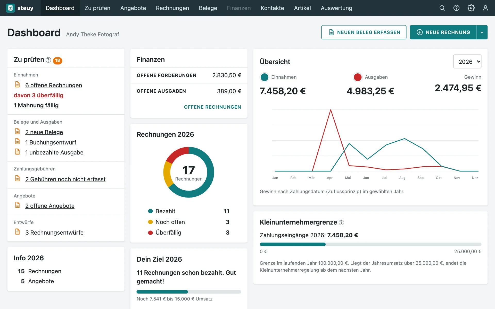
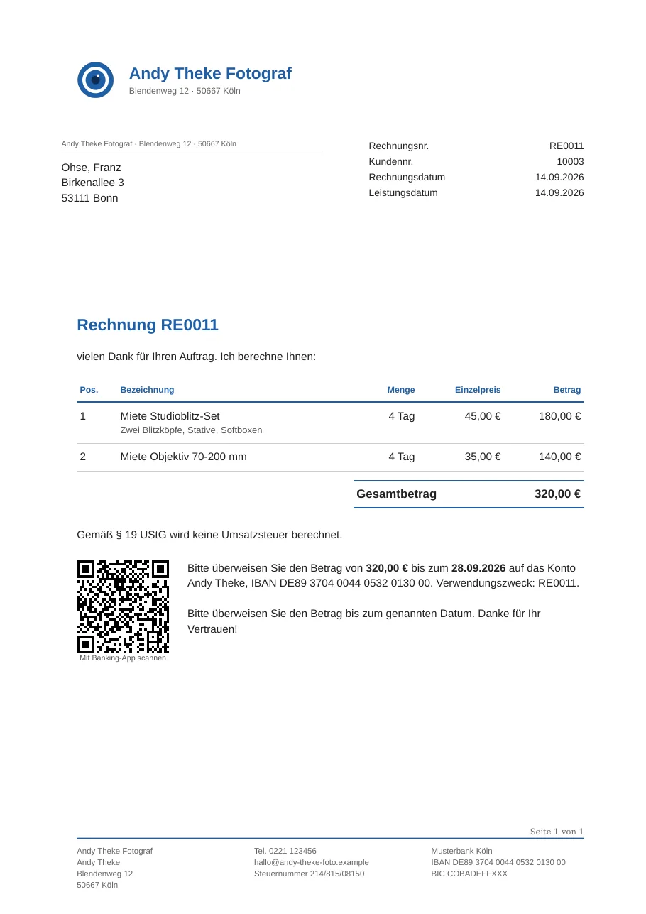
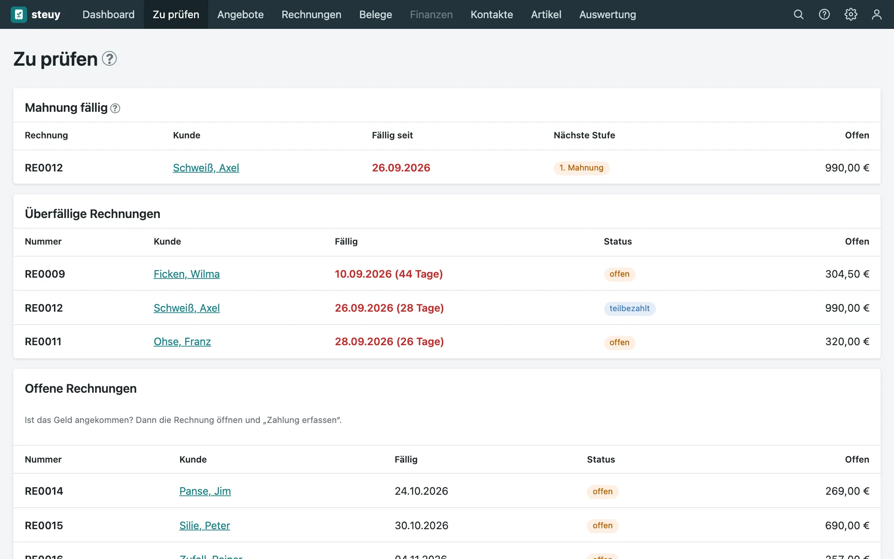
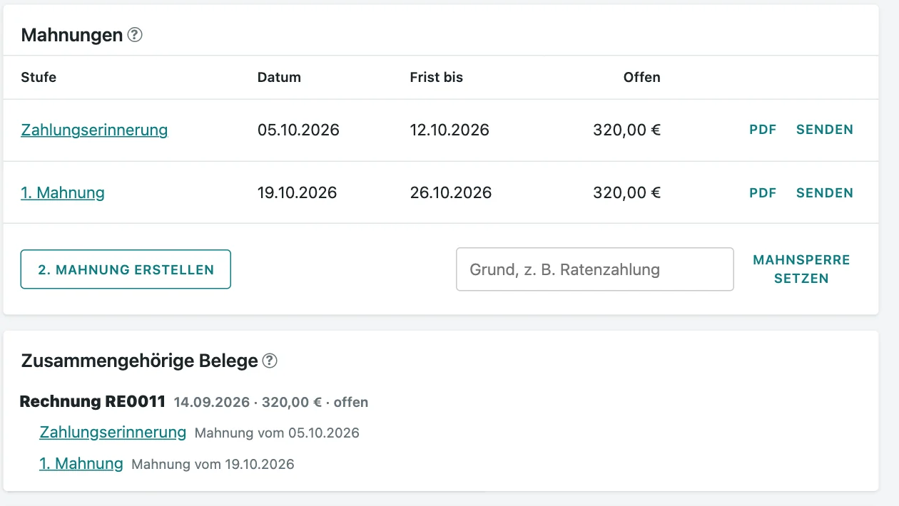
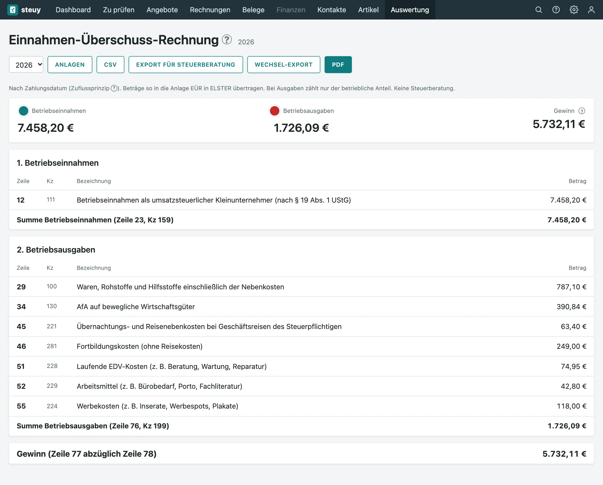

Rechnungen, die nach dir aussehen
Fünf Vorlagen, dein Logo, deine Farbe, deine Schrift, mit Vorschau beim Gestalten. Das PDF ist zur Archivierung geeignet (PDF/A).
Der Hinweis nach § 19 UStG steht automatisch drauf.
Kostenlos · selbst gehostet · quelloffen
steuy schreibt deine Rechnungen, erinnert Kunden ans Bezahlen, sammelt deine Belege und rechnet am Jahresende die EÜR aus. Du brauchst dafür kein Konto bei irgendwem, nur einen kleinen Rechner, der bei dir zu Hause läuft.
steuy ist in der Beta und wird aktiv weiterentwickelt, siehe Roadmap. Für Kleingewerbe nach § 19 UStG. Die Demo braucht keine Anmeldung, deine Änderungen verschwinden nach 15 Minuten wieder.

So sieht Buchhaltung aus, wenn sie nicht nebenbei zur Hauptarbeit wird.
Kunde auswählen, Positionen aus deiner Artikelliste hinzufügen, fertig. Das PDF mit QR-Code für die Überweisung geht per Mail raus, mit deinem Logo und deinen Farben.
Beleg in den Scanner legen, Taste drücken: Betrag, Datum und Lieferant werden vorgeschlagen. Oder ein Foto hochladen. Du bestätigst nur noch.
Zahlung eintragen, auch Teilzahlungen. Welche Rechnungen noch offen sind, siehst du auf einen Blick.
steuy sagt dir, wann die Zahlungserinnerung fällig ist, und schickt sie auf Wunsch selbst. Mahnstufen sind vorbereitet.
Nach dem Zuflussprinzip ausgewertet, mit den Werten für die Anlage EÜR. Die trägst du dann in ELSTER ein.
Ruhig und aufgeräumt. Das sind echte Bildschirmfotos aus der Demo mit einer erfundenen Fotografen-Firma.

Fünf Vorlagen, dein Logo, deine Farbe, deine Schrift, mit Vorschau beim Gestalten. Das PDF ist zur Archivierung geeignet (PDF/A).
Der Hinweis nach § 19 UStG steht automatisch drauf.
Offene Rechnungen, fällige Mahnungen, neue Belege, Entwürfe: „Zu prüfen“ sammelt alles, damit du nichts suchen musst.
Das Dashboard davor zeigt dir morgens in einem Blick, wie das Jahr läuft.


Zu jeder Rechnung gehört ihr ganzer Weg: Zahlungen, Erinnerung, Mahnungen. Die Schreiben entstehen als PDF, mit der richtigen Frist.
Auf Wunsch geht die Erinnerung automatisch raus. Wer das nicht will, lässt es ausgeschaltet.
Betriebseinnahmen und -ausgaben stehen so sortiert, wie das Formular sie verlangt. Auch Anlagegüter und ihre Abschreibung sind dabei.

Das ist der eigentliche Grund, warum es steuy gibt.
steuy läuft auf deinem Rechner. Niemand sonst sieht deine Kunden, Rechnungen und Umsätze.
steuy kostet nichts, auch später nicht. Du zahlst nur den Strom für einen kleinen Rechner.
Du kannst nachlesen, was die Software macht, und sie für dein eigenes Gewerbe anpassen. Die Lizenz (PolyForm Shield) verbietet nur, steuy als Konkurrenzprodukt anzubieten.
Dafür gilt auch: Sicherungen sind deine Aufgabe. Ein Skript nimmt sie dir ab, die Kopie gehört auf ein zweites Gerät.
Besser, du weißt es vorher.
Ein gebrauchter Thin Client wie der Dell Wyse 5070 reicht. Mindestens 1 GB RAM, 64 Bit.
Die Anleitung führt vom leeren Gerät bis zur fertigen Buchhaltung, Schritt für Schritt.
git clone https://github.com/faolan-exe/Steuy.git, dann docker compose up -d --build.
Die Demo zeigt einen Fotografen mit Rechnungen, Mahnungen und Belegen. Ein kurzer Rundgang erklärt jeden Bereich. Klick dich durch, nichts davon bleibt gespeichert.
Zur Demosteuy ist eine kostenlose, selbst gehostete Buchhaltungssoftware für Kleinunternehmer und Kleingewerbe nach § 19 UStG. Du schreibst Angebote, Rechnungen und Lieferscheine, verwaltest Belege und Zahlungen, mahnst offene Rechnungen und bekommst am Jahresende die Werte für die Anlage EÜR. Die Software läuft auf deinem eigenen Rechner, deine Daten verlassen ihn nicht.
Für Kleinunternehmer, Kleingewerbetreibende, Freiberufler und Selbstständige, die die Kleinunternehmerregelung (§ 19 UStG) nutzen und ihren Gewinn per Einnahmen-Überschuss-Rechnung (EÜR) ermitteln, zum Beispiel Fotografen, Handwerker, Berater, Designer, Entwickler und kleine Online-Shops.
Nichts. steuy ist kostenlos und ohne Abo. Du brauchst nur einen kleinen Rechner, auf dem es dauerhaft läuft, zum Beispiel einen gebrauchten Thin Client oder Mini-PC.
steuy ist quelloffen (Source-available): Du kannst den Quellcode lesen, ändern und im eigenen Gewerbe nutzen. Die Lizenz ist die PolyForm Shield License 1.0.0. Sie verbietet nur, steuy oder eine Abwandlung als konkurrierendes Produkt oder Dienst anzubieten. Eine Open-Source-Lizenz im Sinne der OSI ist das deshalb nicht.
steuy läuft auf einem Rechner, den du selbst betreibst, zum Beispiel zu Hause im Heimnetz. Es gibt keine Cloud, kein Kundenkonto bei uns und keine Weitergabe deiner Buchhaltungsdaten. Du bist selbst für Betrieb und Sicherung verantwortlich, dafür gehören die Daten dir.
Nein. Eine Schritt-für-Schritt-Anleitung führt vom leeren Thin Client oder Mini-PC bis zum laufenden steuy. Wer schon einen Proxmox- oder Docker-Server hat, installiert mit einem Befehl.
Ja. steuy importiert das DATEV-Archiv und die CSV-Zahlungslisten aus Lexware, prüft die Daten und legt sie als Entwürfe an.
steuy setzt die technischen Anforderungen der GoBD an Unveränderbarkeit und Nachvollziehbarkeit um: Festgeschriebene Buchungen und Rechnungen lassen sich nicht ändern oder löschen, Belege werden mit Prüfsumme abgelegt, jede Änderung wird protokolliert. Eine Zertifizierung gibt es nicht, die Verantwortung für die ordnungsgemäße Buchführung bleibt bei dir.
Ja. Der Scan-Eingang nimmt Scans deines Scanners (zum Beispiel Brother ADS-1800W) über eine eingebaute Netzwerkfreigabe entgegen und legt sie mit Texterkennung als Belege an. Einschalten geht in den Einstellungen mit einem Haken.
Ja, in der Live-Demo unter steuy.philsit.de. Sie läuft ohne Anmeldung mit einer erfundenen Musterfirma und wird alle 15 Minuten zurückgesetzt.
Alle Fragen und Antworten in der Dokumentation (mit Suche)
steuy is a free, self-hosted accounting and invoicing application for small businesses and sole proprietors in Germany who use the small-business scheme (Kleinunternehmerregelung, § 19 UStG) and report profit by simple cash-basis accounting (EÜR). Write quotes, invoices and delivery notes, track payments and dunning, manage receipts (including direct scan-to-folder from a network scanner) and get the figures for the annual tax form. It runs on your own hardware, for example a small thin client, and your data never leaves your server. The source code is available under the PolyForm Shield License 1.0.0 (source-available, not OSI open source). The user interface is in German. View on GitHub.